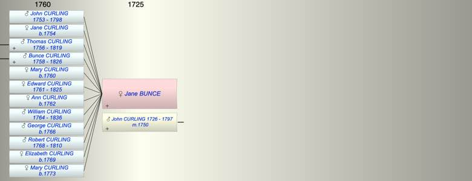

| [Index] |
| Jane BUNCE |
|  |
| m. 15 Sep 1750 John CURLING (1726 - 1797) at St Mary Bredman, Canterbury |
| Grandchildren (4): |
| Thomas Oakley CURLING (1781 - 1825), Catherine CURLING (1783 - 1805), Henry CURLING, James Bunce CURLING (1800 - 1863) |
| Events in Jane BUNCE's life | |||||
| Date | Age | Event | Place | Notes | Src |
| 15 Sep 1750 | Married John CURLING (aged 24) | St Mary Bredman, Canterbury | |||
| 1753 | Birth of son John CURLING | ||||
| 1754 | Birth of daughter Jane CURLING | ||||
| 1756 | Birth of son Thomas CURLING | ||||
| 1758 | Birth of son Bunce CURLING | ||||
| 1760 | Birth of daughter Mary CURLING | ||||
| 1761 | Birth of daughter Edward CURLING | ||||
| 1762 | Birth of daughter Ann CURLING | ||||
| 1764 | Birth of son William CURLING | ||||
| 1766 | Birth of son George CURLING | ||||
| 1768 | Birth of son Robert CURLING | ||||
| 1769 | Birth of daughter Elizabeth CURLING | ||||
| 1773 | Birth of daughter Mary CURLING | ||||
| 11 Oct 1797 | Death of husband John CURLING (aged 71) | Ash | Note 1 | ||
| 1798 | Death of son John CURLING (aged 45) | ||||
| 1810 | Death of son Robert CURLING (aged 42) | ||||
| 1819 | Death of son Thomas CURLING (aged 63) | ||||
| 1825 | Death of daughter Edward CURLING (aged 64) | ||||
| 1826 | Death of son Bunce CURLING (aged 68) | buried 7 JUl 1826 Ham ex FS | |||
| 1836 | Death of son William CURLING (aged 72) | ||||
| Note 1: John was living with his son Thomas at Ash next Sandwich at the time of his death but he was buried in the family vault in Ham. |
| Created on a Mac™ using iFamily for Mac™ on 8 Oct 2023 |